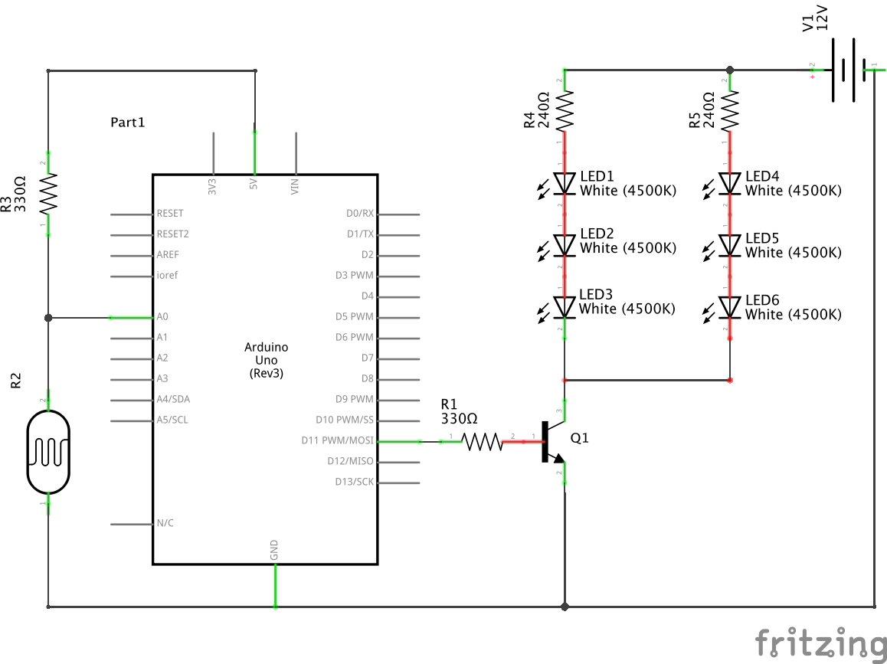
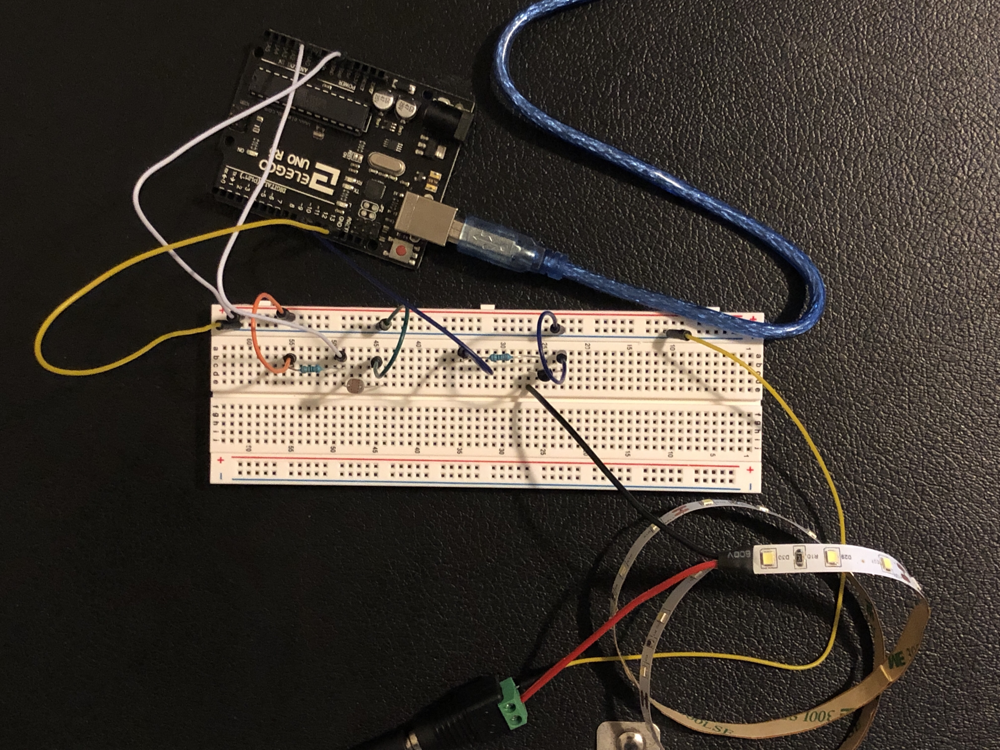

Arsh's Assignment 4!
Circuit in operation

When the photoresistor detects darkness, the LED strip brightens. When it detects light, the LED strip dims, like a super bright, annoying night light!
Calculations
300 LEDs / 18 W = 30 LEDs / x W
x = 1.8 W
P = I*V
1.8 = I*12
I = 0.15 A
As listed on the back of the LED strip box, the entire strip contains 300 LEDs and consumes 18 watts. I cut off a section of the strip with 30 LEDs on it and used proportions to calculate that my strip uses 1.8 watts. With that information, I solved for current, which is 0.15 amps. The transistor can output a maximum of 0.6 amps, so the circuit is operating safely.
V = I*R
5 = 0.02*R
R = 250 Ω
This calculation shows the minimum resistance required for the photoresistor. I used 330 Ω resistors to be safe.
Schematic

Only two sections of the LED strip are shown in the schematic above for the readability purposes. The actual strip I used had 10 sections for a total of 30 LEDs.
Circuit

Code Snippet
const int analogInPin = A0; // analog input pin that photoresistor is connected to
const int ledPin = 11; // digital input pin that LED strip is connected to
int sensorValue = 0; // value read from photoresistor
int outputValue = 0; // value output to the PWM (analog out)
// setting up pins and serial monitor
void setup() {
Serial.begin(9600); // initialize serial communications at 9600 bps
pinMode(analogInPin, INPUT); // set analog in pin as an input
pinMode(ledPin, OUTPUT); // set LED strip pin as an output
}
// this function will loop forever
void loop() {
sensorValue = analogRead(analogInPin); // read analog in value
outputValue = map(sensorValue, 900, 1100, 0, 1023); // map it to the range of the analog out
analogWrite(ledPin, outputValue - 400); // set the brightness of the LED strip to the output value minus 400 to make the change in brightness more obvious
Serial.println(sensorValue); // write the sensor value to the serial monitor
// wait 2 milliseconds before the next loop for the analog-to-digital
// converter to settle after the last reading:
delay(2);
}